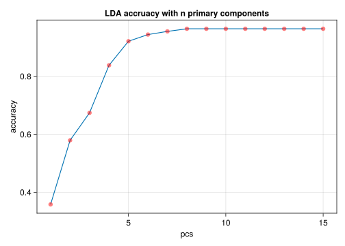

import MLJ:transform,predict
using CSV,DataFrames,Tidier,Pipe
using CairoMakie,AlgebraOfGraphics,MakieThemes
using MLJ,MLJModelInterface,Random
#Makie.set_theme!(ggthemr(:flat))5 texture data pca
info
dataset ref: data
1. load package
2. load csv
df=CSV.File("../../data/Texture.csv")|>DataFrame
df=@chain df begin
@clean_names
coerce(_,:a41=> Multiclass)
end
first(df,5)5×41 DataFrame
| Row | a1 | a2 | a3 | a4 | a5 | a6 | a7 | a8 | a9 | a10 | a11 | a12 | a13 | a14 | a15 | a16 | a17 | a18 | a19 | a20 | a21 | a22 | a23 | a24 | a25 | a26 | a27 | a28 | a29 | a30 | a31 | a32 | a33 | a34 | a35 | a36 | a37 | a38 | a39 | a40 | a41 |
|---|---|---|---|---|---|---|---|---|---|---|---|---|---|---|---|---|---|---|---|---|---|---|---|---|---|---|---|---|---|---|---|---|---|---|---|---|---|---|---|---|---|
| Float64 | Float64 | Float64 | Float64 | Float64 | Float64 | Float64 | Float64 | Float64 | Float64 | Float64 | Float64 | Float64 | Float64 | Float64 | Float64 | Float64 | Float64 | Float64 | Float64 | Float64 | Float64 | Float64 | Float64 | Float64 | Float64 | Float64 | Float64 | Float64 | Float64 | Float64 | Float64 | Float64 | Float64 | Float64 | Float64 | Float64 | Float64 | Float64 | Float64 | Cat… | |
| 1 | -1.223 | -0.798 | -0.867 | -0.639 | -0.545 | -0.412 | -0.795 | -0.629 | -0.547 | -0.868 | -1.223 | -0.879 | -0.747 | -0.818 | -0.671 | -0.718 | -0.991 | -0.778 | -0.759 | -0.892 | -1.223 | -0.899 | -0.987 | -0.75 | -0.699 | -0.566 | -0.911 | -0.786 | -0.7 | -1.015 | -1.223 | -0.766 | -0.555 | -0.714 | -0.545 | -0.587 | -0.871 | -0.62 | -0.568 | -0.607 | 2 |
| 2 | -1.41 | -1.029 | -1.013 | -0.895 | -0.762 | -0.676 | -1.043 | -0.851 | -0.775 | -1.037 | -1.41 | -1.083 | -0.894 | -1.015 | -0.825 | -0.829 | -1.172 | -0.941 | -0.891 | -1.01 | -1.41 | -1.081 | -1.094 | -0.932 | -0.808 | -0.681 | -1.071 | -0.899 | -0.812 | -1.074 | -1.41 | -0.919 | -0.77 | -0.847 | -0.663 | -0.723 | -1.013 | -0.748 | -0.698 | -0.817 | 2 |
| 3 | -1.107 | -0.649 | -0.629 | -0.492 | -0.367 | -0.298 | -0.682 | -0.478 | -0.395 | -0.681 | -1.107 | -0.718 | -0.533 | -0.671 | -0.496 | -0.533 | -0.849 | -0.603 | -0.575 | -0.673 | -1.107 | -0.839 | -0.853 | -0.7 | -0.596 | -0.443 | -0.829 | -0.68 | -0.595 | -0.87 | -1.107 | -0.692 | -0.445 | -0.588 | -0.371 | -0.368 | -0.746 | -0.457 | -0.379 | -0.469 | 2 |
| 4 | -1.27 | -0.855 | -0.958 | -0.707 | -0.619 | -0.469 | -0.872 | -0.705 | -0.62 | -0.988 | -1.27 | -0.909 | -0.83 | -0.853 | -0.716 | -0.75 | -1.018 | -0.806 | -0.778 | -0.92 | -1.27 | -1.019 | -1.035 | -0.917 | -0.813 | -0.721 | -1.027 | -0.877 | -0.822 | -1.039 | -1.27 | -0.829 | -0.719 | -0.774 | -0.617 | -0.688 | -0.937 | -0.693 | -0.657 | -0.779 | 2 |
| 5 | -1.331 | -0.862 | -0.761 | -0.689 | -0.498 | -0.361 | -0.857 | -0.6 | -0.496 | -0.779 | -1.331 | -0.914 | -0.712 | -0.845 | -0.652 | -0.662 | -1.003 | -0.74 | -0.686 | -0.78 | -1.331 | -1.016 | -0.992 | -0.874 | -0.738 | -0.63 | -1.018 | -0.825 | -0.767 | -1.02 | -1.331 | -0.861 | -0.571 | -0.784 | -0.545 | -0.562 | -0.952 | -0.642 | -0.578 | -0.648 | 2 |
3. describe df
schema(df)┌───────┬────────────┬─────────┐
│ names │ scitypes │ types │
├───────┼────────────┼─────────┤
│ a1 │ Continuous │ Float64 │
│ a2 │ Continuous │ Float64 │
│ a3 │ Continuous │ Float64 │
│ a4 │ Continuous │ Float64 │
│ a5 │ Continuous │ Float64 │
│ a6 │ Continuous │ Float64 │
│ a7 │ Continuous │ Float64 │
│ a8 │ Continuous │ Float64 │
│ a9 │ Continuous │ Float64 │
│ a10 │ Continuous │ Float64 │
│ a11 │ Continuous │ Float64 │
│ a12 │ Continuous │ Float64 │
│ a13 │ Continuous │ Float64 │
│ a14 │ Continuous │ Float64 │
│ a15 │ Continuous │ Float64 │
│ a16 │ Continuous │ Float64 │
│ a17 │ Continuous │ Float64 │
│ a18 │ Continuous │ Float64 │
│ a19 │ Continuous │ Float64 │
│ a20 │ Continuous │ Float64 │
│ a21 │ Continuous │ Float64 │
│ a22 │ Continuous │ Float64 │
│ ⋮ │ ⋮ │ ⋮ │
└───────┴────────────┴─────────┘
19 rows omitted
4. split data
ytrain, Xtrain = unpack(df, ==(:a41), rng=123);
rows,cols=size(Xtrain)(5500, 40)5. MLJ PCA workflow
5.1 load model
get mutliple dimension reduction storage in res_arr
PCA = @load PCA pkg=MultivariateStats
res_arr=[]import MLJMultivariateStatsInterface ✔[ Info: For silent loading, specify `verbosity=0`. Any[]5.2 fitting model
reduce to 2-d data
model=PCA(maxoutdim=2)
mach = machine(model, Xtrain) |> fit!
Ytr =transform(mach, Xtrain)
#cat=levels(ytrain)|>unique
#cats=select(df,:a41)[ Info: Training machine(PCA(maxoutdim = 2, …), …).5500×2 DataFrame
5475 rows omitted
| Row | x1 | x2 |
|---|---|---|
| Float64 | Float64 | |
| 1 | -1.25642 | -0.308682 |
| 2 | -0.740266 | -0.397532 |
| 3 | 1.75078 | 0.169165 |
| 4 | -0.622888 | 0.375062 |
| 5 | -0.636353 | -0.484824 |
| 6 | 0.890232 | 0.0337364 |
| 7 | -0.47026 | 0.532758 |
| 8 | 0.67807 | -0.131215 |
| 9 | -0.899491 | -0.910433 |
| 10 | 0.401573 | -0.101068 |
| 11 | -1.1246 | -0.198562 |
| 12 | -1.8657 | -0.12294 |
| 13 | 1.01029 | -0.307558 |
| ⋮ | ⋮ | ⋮ |
| 5489 | -0.598308 | -0.508119 |
| 5490 | 0.84949 | 0.128737 |
| 5491 | 0.756821 | -0.076106 |
| 5492 | 2.24622 | 0.23815 |
| 5493 | -2.72006 | 0.519569 |
| 5494 | -0.420476 | -0.991829 |
| 5495 | -0.934581 | 0.183474 |
| 5496 | -1.53643 | 0.408634 |
| 5497 | -0.175742 | -0.88779 |
| 5498 | 1.72544 | 0.254954 |
| 5499 | 1.61296 | 0.345779 |
| 5500 | 0.50651 | 0.211842 |
5.3 plot results
let
ax=(width=400, height=300)
table=DataFrame(x1=Ytr.x1,x2=Ytr.x2,cat=df.a41)
datalayer=data(table)
maplayer=mapping(:x1,:x2,color=:cat)
vislayer=visual(Scatter, strokecolor=:black, strokewidth=0.5)
plt=datalayer*maplayer*vislayer
draw(plt,axis=ax)
end
6. project to serval dimension
using pca=>lda workflow
6.1 split data,load model
(Xtrain, Xtest), (ytrain, ytest) = partition((Xtrain, ytrain), 0.7, multi=true, rng=123)
LDA = @load LDA pkg=MultivariateStats
PCA = @load PCA pkg=MultivariateStatsimport MLJMultivariateStatsInterface ✔
import MLJMultivariateStatsInterface ✔[ Info: For silent loading, specify `verbosity=0`.
[ Info: For silent loading, specify `verbosity=0`. MLJMultivariateStatsInterface.PCA6.2 fitting model
function different_pca_components(;n=3)
acc_arr=[]
for i in 1:n
model1=PCA(maxoutdim=i)
model2 = LDA()
mach1 = machine(model1, Xtrain) |> fit!
Ytr =transform(mach1, Xtrain)
mach2 = machine(model2, Ytr, ytrain)|>fit!
Yte=transform(mach1, Xtest)
yhat = predict_mode(mach2, Yte)
res=accuracy(yhat,ytest)
push!(acc_arr,res)
end
return acc_arr
end
acc_arr=different_pca_components(;n=15)[ Info: Training machine(PCA(maxoutdim = 1, …), …).
[ Info: Training machine(LDA(method = gevd, …), …).
[ Info: Training machine(PCA(maxoutdim = 2, …), …).
[ Info: Training machine(LDA(method = gevd, …), …).
[ Info: Training machine(PCA(maxoutdim = 3, …), …).
[ Info: Training machine(LDA(method = gevd, …), …).
[ Info: Training machine(PCA(maxoutdim = 4, …), …).
[ Info: Training machine(LDA(method = gevd, …), …).
[ Info: Training machine(PCA(maxoutdim = 5, …), …).
[ Info: Training machine(LDA(method = gevd, …), …).
[ Info: Training machine(PCA(maxoutdim = 6, …), …).
[ Info: Training machine(LDA(method = gevd, …), …).
[ Info: Training machine(PCA(maxoutdim = 7, …), …).
[ Info: Training machine(LDA(method = gevd, …), …).
[ Info: Training machine(PCA(maxoutdim = 8, …), …).
[ Info: Training machine(LDA(method = gevd, …), …).
[ Info: Training machine(PCA(maxoutdim = 9, …), …).
[ Info: Training machine(LDA(method = gevd, …), …).
[ Info: Training machine(PCA(maxoutdim = 10, …), …).
[ Info: Training machine(LDA(method = gevd, …), …).
[ Info: Training machine(PCA(maxoutdim = 11, …), …).
[ Info: Training machine(LDA(method = gevd, …), …).
[ Info: Training machine(PCA(maxoutdim = 12, …), …).
[ Info: Training machine(LDA(method = gevd, …), …).
[ Info: Training machine(PCA(maxoutdim = 13, …), …).
[ Info: Training machine(LDA(method = gevd, …), …).
[ Info: Training machine(PCA(maxoutdim = 14, …), …).
[ Info: Training machine(LDA(method = gevd, …), …).
[ Info: Training machine(PCA(maxoutdim = 15, …), …).
[ Info: Training machine(LDA(method = gevd, …), …).15-element Vector{Any}:
0.3575757575757576
0.5787878787878787
0.673939393939394
0.8375757575757575
0.9212121212121213
0.9436363636363636
0.9551515151515152
0.9636363636363636
0.9636363636363636
0.9636363636363636
0.9636363636363636
0.9636363636363636
0.9636363636363636
0.9636363636363636
0.96363636363636366.3 plot results
function plot_accuracy(acc_arr)
len=length(acc_arr)
fig=Figure()
ax=Axis(fig[1,1],xlabel="pcs",ylabel="accuracy",title="LDA accruacy with n primary components")
xs=1:len
acc_arr=round.(acc_arr,digits=3)
scatterlines!(ax,xs,acc_arr,markercolor = (:red,0.5))
fig
#save("16-texture-PCA-LDA.png",fig)
end
plot_accuracy(acc_arr)